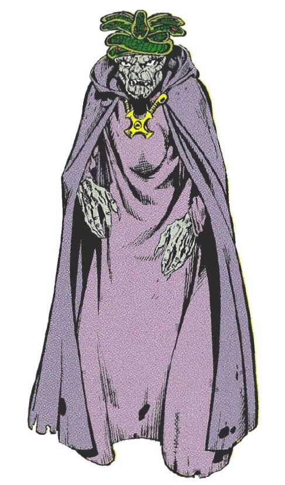

The Red Naga
Naga, a member of the Homo mermanus species, was born five hundred years ago in Lemuria, a submarine continent
in the Pacific Ocean. Through some means, Naga became the emperor of Lemuria and a worshipper of serpent god
Set,
who considered Naga a valuable servant.
Powers and Abilities
- Resistance to Cold
- Swimming
- Water breathing due to gills on his neck; can breathe both fresh and salt water; however, cannot breathe
air. Can resist water pressure in the ocean, and see perfectly underwater.
Directions
For reaching to the lair of my nemesis from maryville
- First reach kansas city airport by road
- We should book out flight tickets prior, from kansas to Pacific Continent
- After reaching the Pacific continent then hire a vehicle to reach Pacific Continent
- Then you see the red naga.

Back to index page